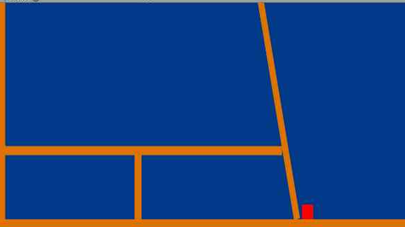
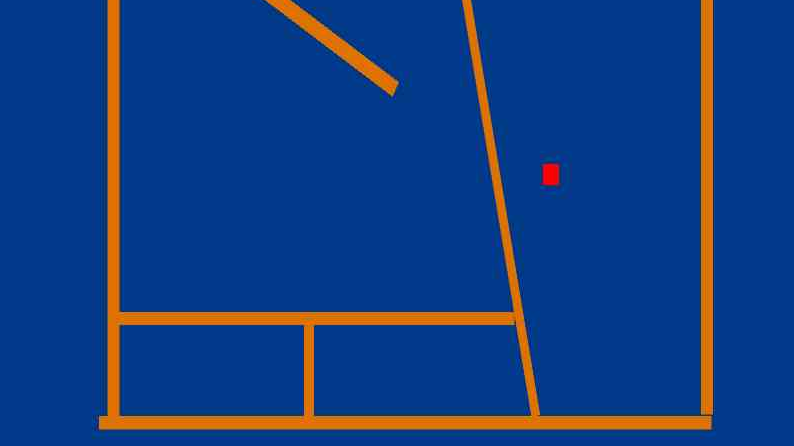

Это 2д паркур-игра. Она создана Амином . Основной фичей является возможность изменять законы физики .Вы на оффициальном сайте игры PhysGame!
Вы хотели бы почувствовать себя богом? Если да, то эта игра как раз для вас .
В ней вы можете летать и прятиваться к стенам как человек паук(но у паутины у вас не будет(лох!)).
На сайте вы найдёте информацию об игре , как играть и кто её сделал.